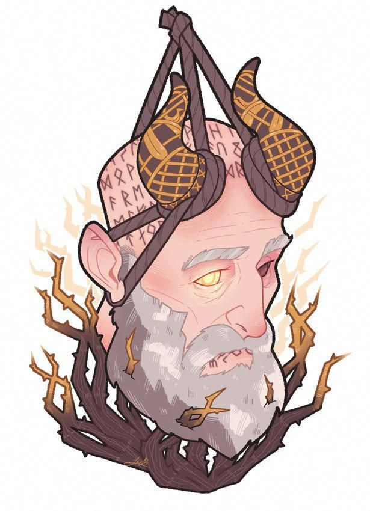
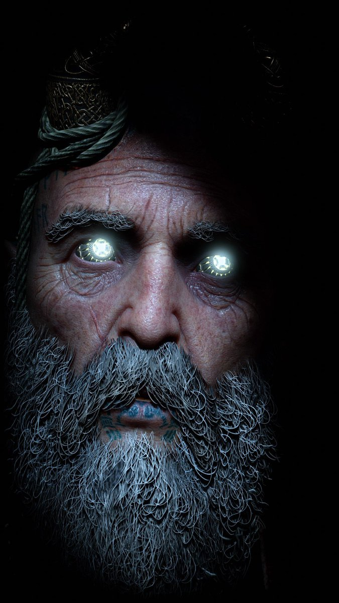
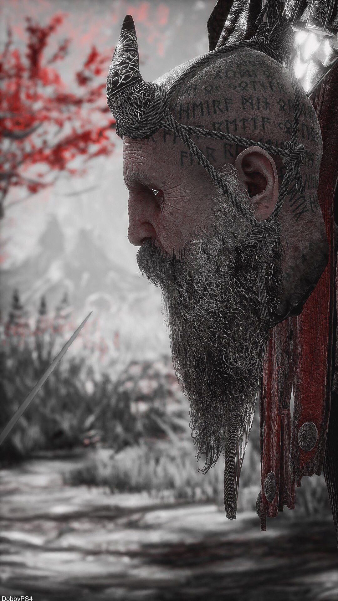

Несмотря на свою яркую личность, Мимир испытывает сильную злость и негодование по отношению к богам озиров, в частности к Одину и Тору. Он считает, что подавляющее большинство из них гедонисты, параноики, высокомерные, воинственные и виноваты в трагедиях, которые пережили Девять миров. Перед заключением в тюрьму Мимир делал все возможное, чтобы попытаться установить мир между Царствами, где мог, например, посоветовал Одину жениться на Фрейе, чтобы положить конец конфликту между богами озиров и ванов.
Норвежская мифология
Мимир, что в переводе с древнескандинавского означает «вспоминающий» или «мудрый», - фигура в скандинавской мифологии, известная своими знаниями и мудростью. Он обезглавлен во время асиро-ванской войны. После этого Один носит с собой голову Мимира, и та рассказывает ему секретные знания.
Описание
Когда его впервые находят, Мимир изображен встроенным в дерево. У него на голове два рога и растущая седая борода. Макушка его головы покрыта руническими татуировками, а нижняя губа татуирована узором, спускающимся по краям рта и заканчивающимся чуть выше бороды. Ему не хватает одного из его сияющих золотых глаз. В конце концов Кратос обезглавил его и вернул к жизни, хотя он по-прежнему выглядит так же. Когда он мертв, его глаза тускнеют и обнажают бледно-желтую радужку. Позже Кратос и Атрей забирают другой глаз Мимира, вставляют его обратно ему в голову и обнаруживают, что он все еще работает.
Во время сражений Мимир служит второй парой глаз для Кратоса, обычно предупреждая спартанца, что враг атакует из одной из его слепых зон.

Личность
Мимир воспитан, добр и обладает веселым, если не саркастичным и остроумным чувством юмора. Даже в своем обезглавленном состоянии Мимир пытается извлечь максимальную пользу из ситуации, находя это лучше, чем заключение, и поэтому он пытается помочь всем, чем может. Мимир часто обладает обширной информацией о божествах, монстрах, цивилизациях, Девяти Царствах и известных персонажах скандинавской мифологии. Мимир также завершает большинство своих фраз словом «брат», возможно, как форма товарищества по отношению к Кратосу и его сыну Атрею, которого он иногда называет «младшим братом» или «парнем».
Будучи частью путешествующей компании Кратоса и его сына, Мимир становится своего рода уравновешивающей силой между ними, обучая Атрея использовать свои способности во благо и часто советуя Кратосу более открыто рассказывать правду о своем прошлом. С этой целью Мимир демонстрирует, что он эмоционально чувствителен и проницателен в отношении потенциального воздействия, которое может иметь отдаленное отношение Кратоса к Атрею, но уважает желания Кратоса и не сообщает самому Атрею. Он также был первым, кто заметил темные изменения в поведении Атрея, когда он наконец узнал о своем божественном наследии и, таким образом, попытался привить идеалы, которые отстаивали такие фигуры, как Тир, используя свои силы с мудростью и во благо.


Несмотря на свою яркую личность, Мимир испытывает сильную злость и негодование по отношению к богам озиров, в частности к Одину и Тору. Он считает, что подавляющее большинство из них гедонисты, параноики, высокомерные, воинственные и виноваты в трагедиях, которые пережили Девять миров. Перед заключением в тюрьму Мимир делал все возможное, чтобы попытаться установить мир между Царствами, где мог, например, посоветовал Одину жениться на Фрейе, чтобы положить конец конфликту между богами озиров и ванов.
Мимир также винит себя в том, что ему так и не удалось достичь настоящего прочного мира, когда он был советником Одина. Всякий раз, когда он рассказывал сказки о том времени, когда он был советником Одина, Мимир проявлял видимое раскаяние и открыто признавал, что чувствует себя виноватым. Одним из примеров было то, когда он открыто заявил, что заслужил гнев Фрейи, и выразил видимое раскаяние в том, что его уговоры Фрейи выйти замуж за Одина вызвали ее. Он также извинился перед Сигрун за то, что был так беспомощен, чтобы спасти ее и валькирий.
В отличие от озировских богов, Мимир высоко ценил Тира , считая его великим лидером, сражавшимся за мир, знания и понимание, а не за власть и контроль.
Несмотря на то, что он является частью скандинавской мифологии, Мимир знает о других мифологиях и их пантеонах, упоминая в хранилище Тира египетских богов и греческий пантеон в Хельхейме. Что касается греческих богов, он также знает об их кончине, которая, по его словам, была заслуженной. Однако он не знал, кто демонтировал пантеон, пока не сопровождал Кратоса, который, как он позже узнал, был сыном Зевса, и признал его призраком Спарты.
В отличие от озировских богов, Мимир высоко ценил Тира , считая его великим лидером, сражавшимся за мир, знания и понимание, а не за власть и контроль.
Несмотря на то, что он является частью скандинавской мифологии, Мимир знает о других мифологиях и их пантеонах, упоминая в хранилище Тира египетских богов и греческий пантеон в Хельхейме. Что касается греческих богов, он также знает об их кончине, которая, по его словам, была заслуженной. Однако он не знал, кто демонтировал пантеон, пока не сопровождал Кратоса, который, как он позже узнал, был сыном Зевса, и признал его призраком Спарты.


Волшебные глаза : У Мимира волшебные глаза, сделанные из кристалла Бифрёст, способные раскрывать секреты в таких местах, как кладовая Тира, и проецировать изображения. Изначально имея два глаза, он потерял левый глаз из-за Одина, и Всеотец поместил его в статую Тора, которую Ёрмунгандур случайно съел, но позже в игре, при содействии Йормунгандура, Кратос и его сын находят и возвращают ему, чтобы использовать оба глаза как Путешествующий кристалл, чтобы открыть врата в Йотунхейм.
Сверхчеловеческая стойкость : Мимир, будучи богом, обладает более сильной структурой тела, чем смертные. Это подразумевается, поскольку он смог пережить падение с горы в пьяном виде (к его смущению), хотя он был серьезно ранен, и ему пришлось лечить валькирийскую целительницу Эйр.
Подводное дыхание : В обезглавленном состоянии Мимир может дышать под водой. (из-за отсутствия легких)
Силы и способности
Будучи богом, Мимир сильнее смертного, но теперь его тело осталось в том месте, где его заточил Один. Реанимируется только его голова, и ему приходится полагаться на Кратоса и других, чтобы двигаться и видеть.
Почти всеведение : как Бог Знания и Мудрости, Мимир знает почти все в скандинавской мифологии: он утверждает, что осведомлен о каждой сделке, войне и уголке всех Девяти миров и обладает огромным интеллектом, даже будучи широко признанным самым умным человеком на свете. . Мимир также может говорить и читать на многих языках, даже на мертвых языках, таких как Ёрмунгандр.с. Мимир также хорошо знаком с другими культурами и пантеонами, способен признать, что Кратос божественен, а не из какого-либо из Девяти миров. Он преуспел в дедуктивных рассуждениях: собрав вместе несколько контекстных подсказок, он смог определить, что Кратос - это призрак Спарты, а также полубог, сын Зевса. Несмотря на все это, он открыто признает, что даже его знания имеют пределы, например, почему Один хочет Кратоса и его сына. Самым большим исключением является слабость Бальдура: Мимир знал об этом (омеле), но Фрейя околдовала его, чтобы другие не узнали об этом. В результате, пока заклинание не было разрушено, Мимир страдал от кратковременной потери памяти всякий раз, когда субъект возникал.
Мелочи
Мимир упоминает, что до своего собственного положения советника Одина он служил под видом короля фей; в то время, когда он был немногим старше Атрея. Его заявление о том, что он был в некотором роде шутом и имел все неприятности с «местными смертными», напоминает фигуру Пака из шекспировского «Сна в летнюю ночь». Эта информация дополнительно подтверждается характерными рогами на голове Мимира, обычным изображением сатира-обманщика из шекспировской комедии, а также упоминанием о себе как «веселого странника», отсылка к его «Я веселый странник в ночи» монолог из спектакля. Это могло означать, что Мимир изначально даже не был Богом, а был фейри.
Мимир - единственный бог, который искренне помогает Кратосу в его путешествиях, даже не пытаясь использовать его для каких-то эгоистичных целей (хотя Оркос был первым человеком, который искренне хотел помочь Кратосу, хотя он и не был Богом), что в конечном итоге привело к некоторым своего рода предательство, а также единственный бог, который никогда не обращался против него из-за внешних обстоятельств, и даже зашел так далеко, что назвал его «братом». Арес, Афина и олимпийцы, с другой стороны, просто использовали его как сосуд для убийства для своей личной выгоды, в то время как Гефест и Фрейя изначально были полезны, пока не повернулись против Кратоса из-за инцидентов, связанных с их соответствующим ребенком.

Мимир - единственный бог, который искренне помогает Кратосу в его путешествиях, даже не пытаясь использовать его для каких-то эгоистичных целей (хотя Оркос был первым человеком, который искренне хотел помочь Кратосу, хотя он и не был Богом), что в конечном итоге привело к некоторым своего рода предательство, а также единственный бог, который никогда не обращался против него из-за внешних обстоятельств, и даже зашел так далеко, что назвал его «братом».